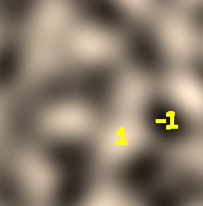
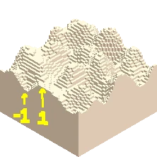
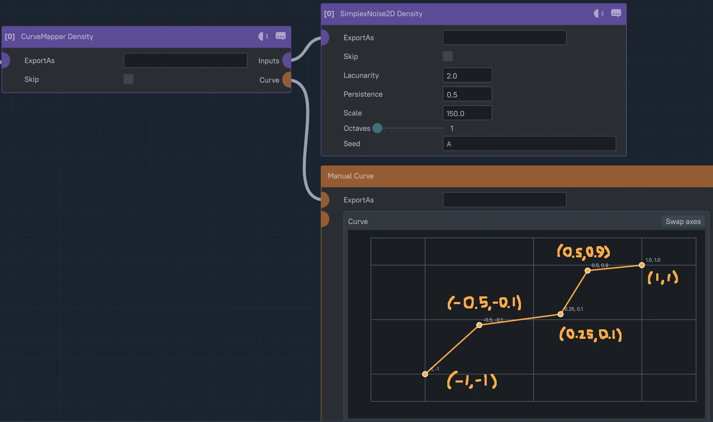
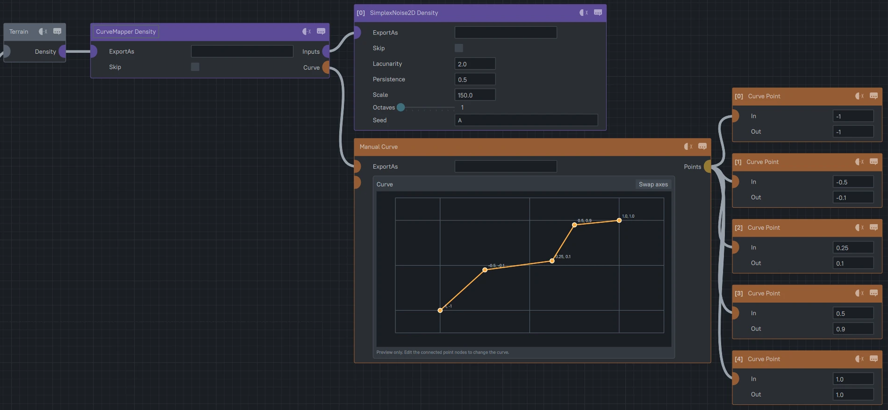
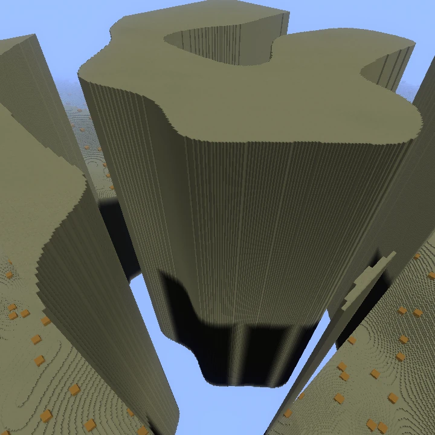
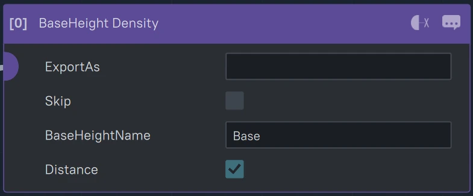
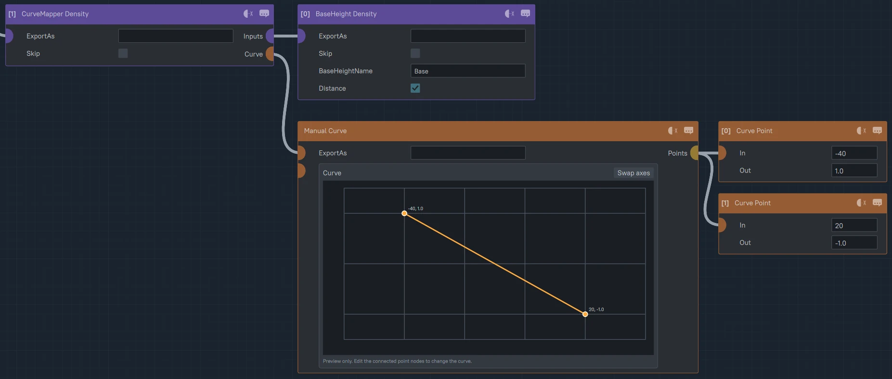
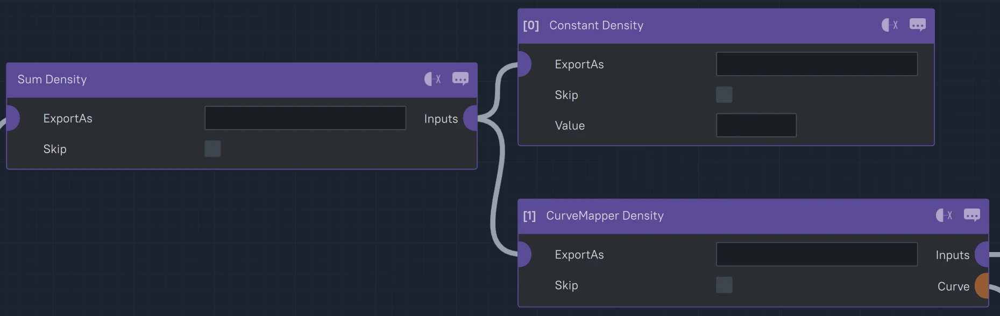
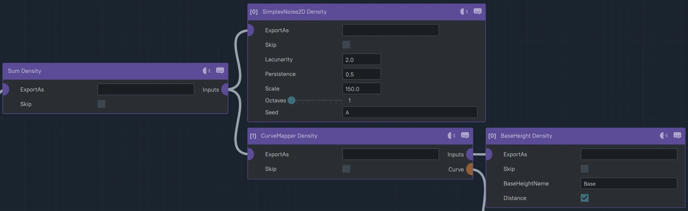
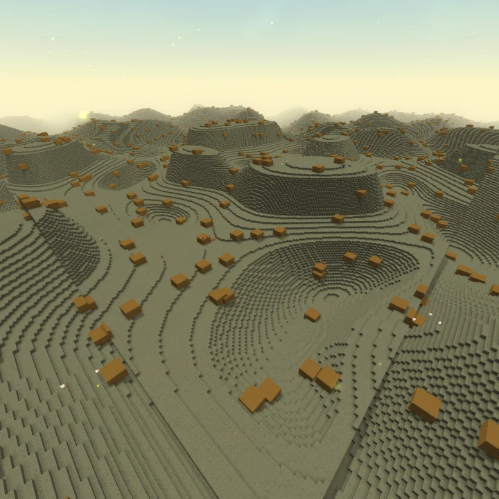

Shaping a procedural world can be tricky due to the nature of it, it's procedural and infinite.
How do you control infinity? This is where the concept of Density can be incredibly useful!
If we look at Density in it's simplest form, it's a computation to give us 1 number per every block in the world.
Each number in this first 2D example will represent how high the terrain should be. -1 being the lowest
and +1 being the highest. We will also be representing
black as -1 going all the way to white at +1 for an easier visual intepretation of what's happening.


Let's first take a look at our most useful form of Density, Simplex Noise! It's an infinite plane of
random white and black spots mixed together to form a rolling hill pattern exactly like the Basic Biome Example.
Let's modify it to look interesting. I'm going to do that by curvemapping the Simplex Noise to create
flat plains in the middle and end of our noise to create some plains and plateaus which should break up the
monotony of the landscape.

This is the general technique of shaping World Generation, finding ways to modify and add noise values to create
interesting, varied results! We'll go over a few more techniques and noises over the following lessons but it
ultimately comes down to experimentation to create your own patterns!
But first, we've run into a problem... Plugging this directly into our Terrain density creates this weird result!


This is because Hytale uses a different rule for placing blocks in order to have more control over 3D density features.
The rule Hytale uses is that if the density value is greater than 0 at a block
place a block, if it's less than or equal to 0, place air. That's why when we apply this new rule to our 2D Noise pattern we get
this result which doesn't look anything like what we're going for!
But don't worry! What we just learned is not for naught, we just need to go back to the drawing board!
The new plan is to just create a plane of blocks for this new 3D format and I think the BaseHeight density is the perfect node for the job!
First we'll need to add a reference of a BaseHeight value
from our WorldStructure file. In most scenarios, we'll want to use the 'Base' value of '140'. That means
that at y=140, the density value will be 0 and for every block up this node will add 1 and going down it'll subtract 1.

MyBiome
WorldStructureAsset
Framework
2 List Entries
0
1
Type
Decimal Constants
Entries
3 List Entries
0
Name
Base
Value
140
...
This creates a flat plane in the opposite direction where above y=140, the density at each block above is above 0 making them solid.
We can inverse it and create height variation in a couple different ways with the following one being how Hytale does it.
We will first curvemap the BaseHeight to invert it while defining a range of available blocks to modify using noise.
In this case we'll do 40 blocks below to 20 blocks above, setting the bottom value to 1 to create a constant floor and -1 for air above.

Doing this creates a plane in the middle of our range at y=130. Let's now add a constant value to see our range of blocks in action!
Going to +1 raises our plane upwards, while towards -1 lowers the plane. Hitting or going beyond our [-1, 1] bounds though will break
our summation and create infinite gaps or infinite pillars of blocks otherwise known as "artifacts," so we'll need to be careful with our summation
moving forward always making sure it's within this [-1, 1] bounds!

Constant Density:
0.0
And this is exactly what we wanted! -1 creates dips in the terrain, while +1 creates mountains! So let's go ahead and
add a simplex noise to the curvemapped BaseHeight! And ta-da! We have an infinite 3D world of rolling hills with the
same setup as the Basic Biome you start off with!

We can also now add back in our curvemapped simplex noise to see some plains and plateaus in game!

In the next guide, we'll continue shaping our Simplex Noise into different interesting looking patterns using octaves, mix, more curvemappers, and warp!
Next Up